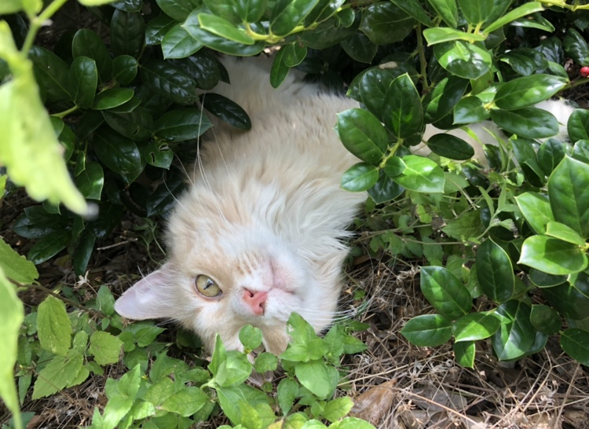

I am from corpus christi, I lived there for 13 years before I moved to austin in 2015. I live with both my parents, my sister, my brother and my cat. When school starts back up i’m going to be a junior… exiting. When I’m not at camp coding, I am usually in my room watching shows that I’ve put off watching for months or listening to music. As fun as that is next month we are starting marching band again and although I love marching band, being in the heat is going to be HORRIBLE!
 Likes: I almost always have headphones in, so I’d say I love music: recently I’ve been listening to Queen a lot.
Dislikes: being interrupted. In general, if someone talks over me I really don’t like that, if I’m listening to music and someone starts talking to me I get kind of mad.
Fun Fact: My favorite company is Marvel, the Comics, the Movies, the Actors are amazing!!
The website i'm on the most is spotify
My favorite female artist is (G)Idle!
My favorite male artist isStrayKids!